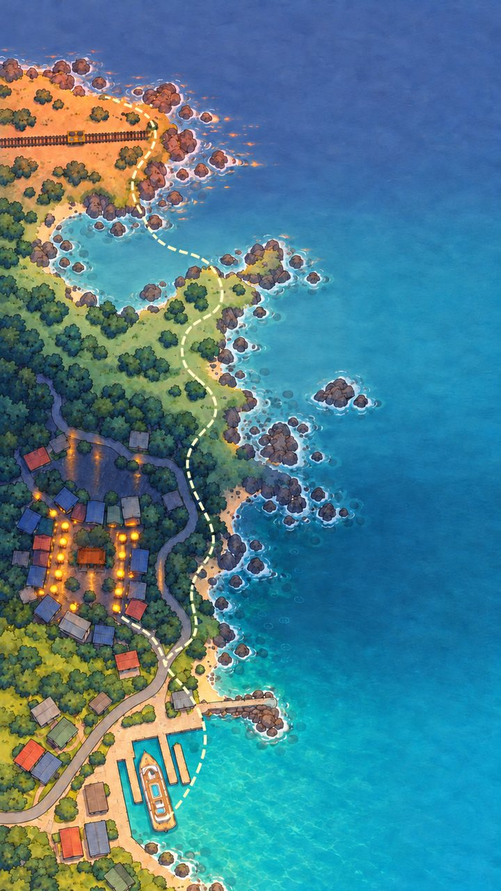

東岸碼頭
音
停
拖曳小鳶，風之羽會自動發射
鯨鯊

小鳶飛行冒險
原型 v0.16：暫用圖、不發點數。測試期間四關都開放
小鳶飛行冒險
第 1 關 東三四旅客服務中心：把漂進港口的垃圾清乾淨。
拖曳
按住畫面拖動小鳶，風之羽自動發射
要閃的
漂流木打不掉；看到紅色區域就整隻離開
油桶
打爆會炸掉旁邊的垃圾，自己別靠太近
救朋友
清掉纏住牠們的垃圾。小卷會來幫忙，海龜送你護盾
鯨鯊
右下角集滿後按一下，全畫面大掃除
滑動帶著走
跟著手指
輕鬆 ♥7
標準 ♥5
挑戰 ♥3
開始
回關卡地圖
原型 v0.16：暫用圖、不發點數
暫停中
繼續
重新開始
過關
0
% 乾淨
一看就知道怎麼玩
是
否
拖曳小鳶很順手
是
否
難度剛好
是
否
還想再玩一局
是
否
再玩一局
回關卡地圖
複製測試紀錄